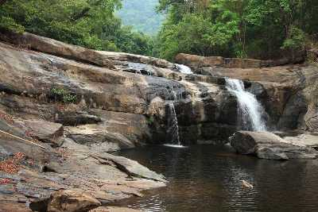

Idukki
Hill View Park

Located just about a kilometre from the Idukki city centre, the Hill View Park is set up approximately 350 feet from the Idukki dam. As the name suggests, Hill View Park is one such places in Idukki that offers spectacular views of the Cheruthoni and Idukki Dams. Besides being a famous tourist destination of Idukki, this park is also a great place to spot diverse wildlife in its belt natural habitat. Hill View Park also has a couple of recent adventure additions including ziplining.
Kulamavu Dam

Situated in Kulamavu, the Kulamavu Dam is a gravity dam. The dam part of three dams dedicated to the Idukki Hydro Electric Power Plant that also encloses a manmade lake. Although quite mundane, this dam is a good place for some short sightseeing. Besides, Kulamavu dam is also part of the state's largest river, Periyar's power ventures. However, photography is not allowed here. There are occasional boating facilities at the lake here. Quite close to the dam are a few eating options.
Thommankuthu Falls
17 km off Thodupuzha lays this captivating Thommankuthu Falls, which is a seven step waterfall cascading down to form a pool. The location is best suited for trekking and rock climbing. Besides, facilities for many other activities such as boating, horse riding and fishing are also available.
Anakkara
A small village in the Idukki district, Anakarra is just about 50 sq. km in area. Situated approximately 18 km from Idduki wildlife sanctuary on the Kumily-Munnar state highway, this place is famous for its spice plantations and picturesque waterfalls.